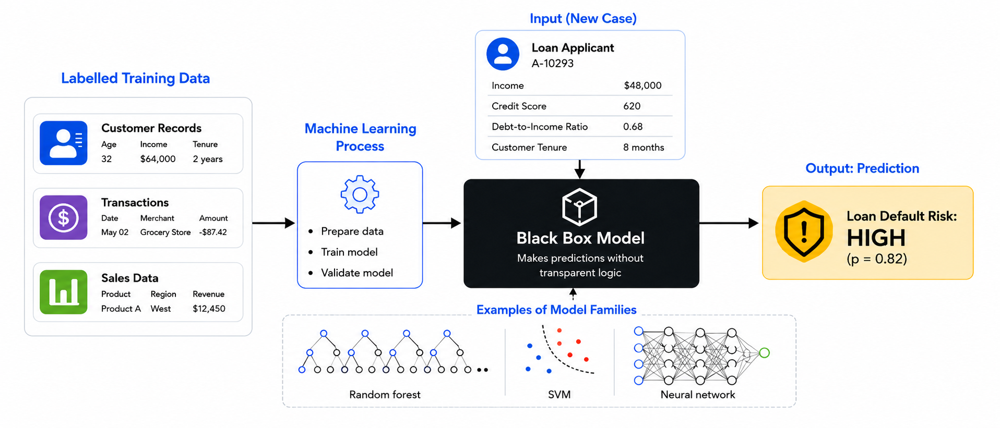
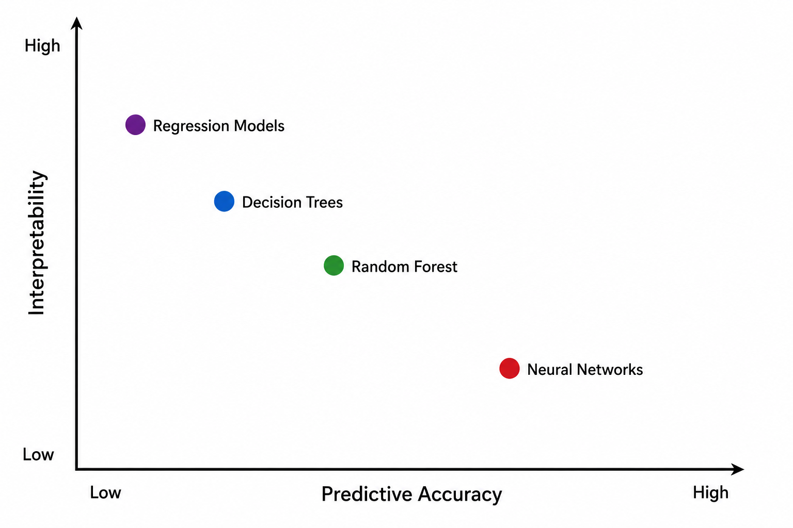
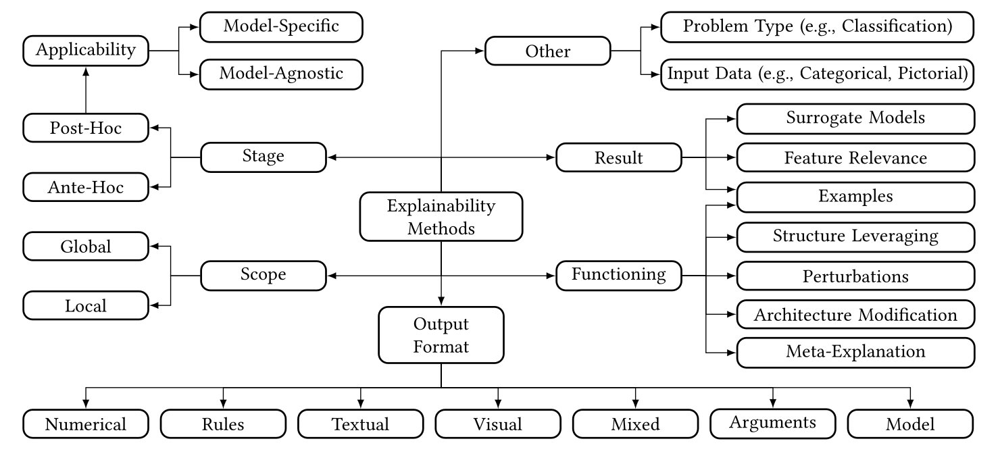
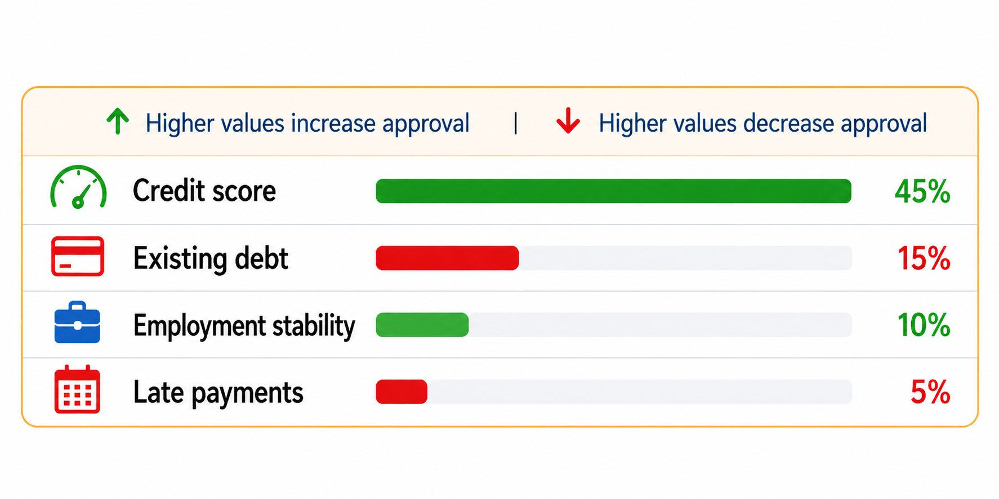
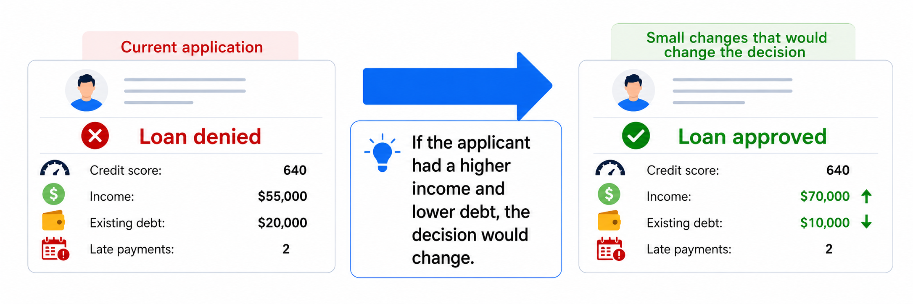
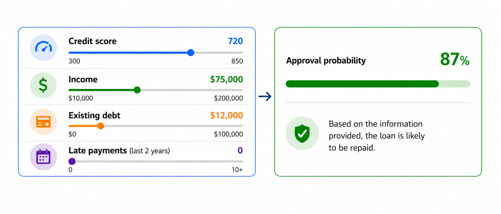
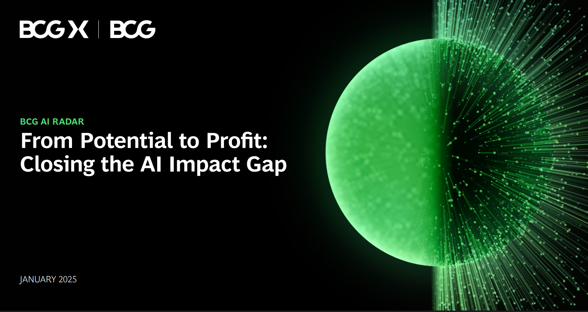
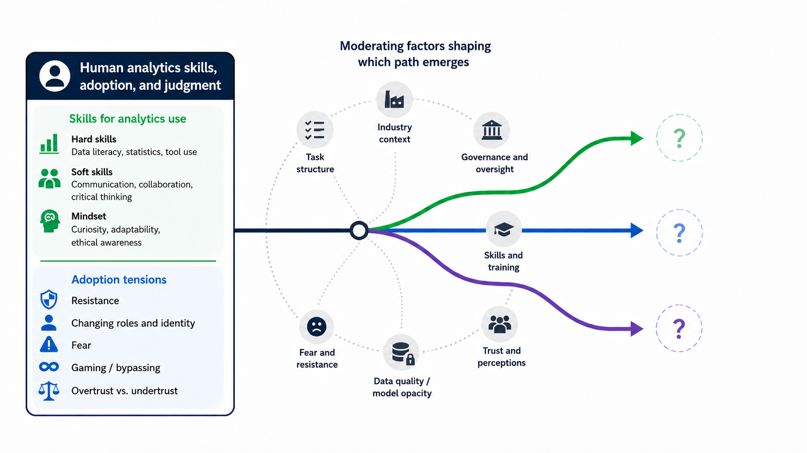

Prof. Dr. Gerit Wagner
(2026-05-11)
Müller et al. (2018): The Effect of Big Data and Analytics on Firm Performance
The study examines whether firms with live big data and analytics (BDA) assets show higher productivity than comparable firms without such assets.
Empirical setting
Outcome and controls
\[ \begin{aligned} \log(Sales) =\;& \beta_0 + \beta_1 \log(Labor) + \beta_2 \log(Capital) + \beta_3 \log(Materials) \\ &+ \beta_4 BDA + Controls + \varepsilon \end{aligned} \]
| OLS | FE | |
|---|---|---|
| log(Capital) | 0.090*** (0.015) |
0.127*** (0.029) |
| log(Labor) | 0.296*** (0.024) |
0.472*** (0.043) |
| log(Materials) | 0.667*** (0.023) |
0.442*** (0.035) |
| BDA | 0.041** (0.020) |
0.038* (0.021) |
| Industry dummies? | Yes | Yes |
| Year dummies? | Yes | Yes |
| IT Asset dummies? | Yes | Yes |
| Observations | 5,698 | 5,698 |
| \(R^2\) | 0.977 | 0.791 |
| Adjusted \(R^2\) | 0.977 | 0.755 |
Key findings and implications
At the industry level, analytics deployment should be understood as part of a broader configuration of digital capabilities, competitive pressure, and organizational capacity to turn data into decisions.
Oesterreich et al. (2022): What translates big data into business value?
This meta-analysis examines how differences in business analytics (BA) resources, capabilities, and contextual factors are associated with differences in firm performance.
Empirical setting

| Independent variable | n | N | Estimated effect | 95% CI | Heterogeneity |
|---|---|---|---|---|---|
| BA technical resources | 91 | 39,246 | 0.452 | 0.409–0.493 | Q = 1920.153**, df = 90, I² = 95.31% |
| BA human resources | 42 | 9,219 | 0.494 | 0.444–0.541 | Q = 379.967**, df = 41, I² = 89.21% |
| BA management capabilities | 69 | 16,074 | 0.477 | 0.433–0.519 | Q = 861.169**, df = 68, I² = 92.10% |
| Data quality | 14 | 3,088 | 0.434 | 0.328–0.528 | Q = 142.257**, df = 13, I² = 90.86% |
| Organizational culture | 18 | 3,698 | 0.472 | 0.391–0.546 | Q = 153.939**, df = 17, I² = 88.96% |
| External pressure | 17 | 3,644 | 0.165 | 0.036–0.288 | Q = 248.937**, df = 16, I² = 93.57% |
Key findings and implications
Kunz et al. (2025): Process-level value creation from business analytics
This theoretical literature review examines how business analytics creates value in organizational processes and how machine learning changes these value-creation paths.
Research focus
Method and evidence base
The TDWI Analytics Maturity Model offers a diagnostic framework for assessing analytics capabilities across organization, resources, data infrastructure, analytics, and governance.
The model classifies analytics maturity into five stages:
TDWI’s model supports a structured assessment of where an organization’s analytics portfolio currently stands and where further development may be needed.
Advanced analytics increasingly becomes part of AI systems when it informs, recommends, or automates consequential decisions.
NIST AI Risk Management Framework
Deployment questions
Analytics creates value only within legitimate organizational, ethical, and legal boundaries.
Possible boundaries
Examples
| Use case | Boundary question |
|---|---|
| Employee analytics | Does this become surveillance? |
| Credit scoring | Who is disadvantaged? |
| Medical triage | What happens in edge cases? |
| Dynamic pricing | When is personalization exploitative? |
| Fraud detection | How are false positives handled? |
Modern analytics systems transform data into predictions without exposing a decision logic that people can easily inspect.

This raises practical questions:

Interpretability is needed for different purposes
| Context | Purpose |
|---|---|
| Trust | know when to rely on the output |
| Engineering | debug errors, bias, and brittle behavior |
| Governance | assign responsibility and define oversight |
| Recourse | understand, challenge, or improve an outcome |
| Regulation | document compliance and enable auditability |
Explainability methods aim to make AI-based systems, their reasoning processes, or their outputs understandable, either by designing models that are explainable from the outset or by generating explanations for already-trained, potentially opaque models.


Feature importance
Mostly static analysis of the trained model and data; often post-hoc, though some models provide importance intrinsically. Usually provides a global view: which variables matter most across the model or dataset.

Counterfactual explanations
Post-hoc explanation based on minimal feature changes that would alter the prediction.

Interactive explanation
Post-hoc, user-driven exploration combining static explanations with what-if changes to input features.
BCG AI Radar 2025 survey
Main finding:
AI is expected to reshape work more than eliminate workers.

Analytics and AI deployment is a people-and-process transformation: executives expect value to come from humans and AI working side by side, with human oversight remaining central.

Analytics can improve organizational performance, but its value depends on context, complementary resources, and how analytics is embedded in organizational processes.
Value creation requires an analytics portfolio that combines data infrastructure, technical and human resources, management capabilities, and governance aligned with strategy.
Responsible deployment means asking not only “Can we optimize this?” but also “Should we?” — defining ethical, legal, and organizational boundaries before systems go live.
As analytics becomes more autonomous, dynamic, and opaque, organizations need interpretability, risk management, and oversight mechanisms that allow people to understand, contest, and intervene.
The human role is changing rather than disappearing: analytics and AI create value when people have the skills, mindset, and organizational conditions to work effectively with them.